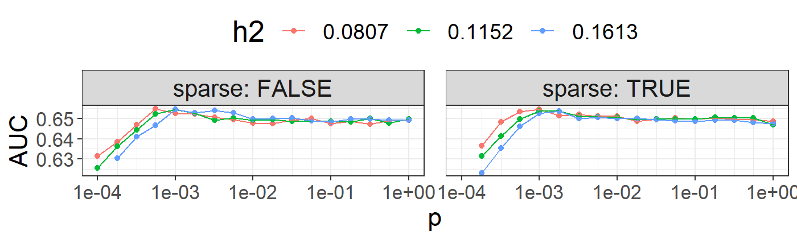

Computing polygenic scores using LDpred2
Florian Privé
April 2, 2020
Source:vignettes/LDpred2.Rmd
LDpred2.RmdIn this document, we show how to compute polygenic risk scores using LDpred2.
Downloading genotype data and summary statistics
You can download data and unzip files in R. We store those files in a directory called "tmp-data" here.
You can see there how we generated these data from the 1000 Genomes project.
First, you need to read genotype data from the PLINK files (or BGEN files) as well as the text file containing summary statistics.
# Load packages bigsnpr and bigstatsr library(bigsnpr)
## Loading required package: bigstatsr# Read from bed/bim/fam, it generates .bk and .rds files. snp_readBed("tmp-data/public-data.bed")
## [1] "C:\\Users\\au639593\\Desktop\\bigsnpr\\tmp-data\\public-data.rds"# Attach the "bigSNP" object in R session obj.bigSNP <- snp_attach("tmp-data/public-data.rds") # See how the file looks like str(obj.bigSNP, max.level = 2, strict.width = "cut")
## List of 3
## $ genotypes:Reference class 'FBM.code256' [package "bigstatsr"] with 15 ..
## ..and 26 methods, of which 12 are possibly relevant:
## .. add_columns, as.FBM, bm, bm.desc, check_dimensions,
## .. check_write_permissions, copy#envRefClass, initialize,
## .. initialize#FBM, save, show#envRefClass, show#FBM
## $ fam :'data.frame': 559 obs. of 6 variables:
## ..$ family.ID : chr [1:559] "EUR_GBR" "EUR_GBR" "EUR_GBR" "EUR_GBR" ...
## ..$ sample.ID : chr [1:559] "HG00096" "HG00097" "HG00099" "HG00100" ...
## ..$ paternal.ID: int [1:559] 0 0 0 0 0 0 0 0 0 0 ...
## ..$ maternal.ID: int [1:559] 0 0 0 0 0 0 0 0 0 0 ...
## ..$ sex : int [1:559] 1 2 2 2 1 2 1 2 2 1 ...
## ..$ affection : int [1:559] 1 2 1 1 1 1 2 1 2 1 ...
## $ map :'data.frame': 130816 obs. of 6 variables:
## ..$ chromosome : int [1:130816] 2 2 2 2 2 2 2 2 2 2 ...
## ..$ marker.ID : chr [1:130816] "rs13400442" "rs7594567" "rs7597758" "..
## ..$ genetic.dist: int [1:130816] 0 0 0 0 0 0 0 0 0 0 ...
## ..$ physical.pos: int [1:130816] 18506 21833 22398 28228 32003 32005 36..
## ..$ allele1 : chr [1:130816] "C" "G" "T" "A" ...
## ..$ allele2 : chr [1:130816] "T" "C" "C" "G" ...
## - attr(*, "class")= chr "bigSNP"# Get aliases for useful slots G <- obj.bigSNP$genotypes CHR <- obj.bigSNP$map$chromosome POS <- obj.bigSNP$map$physical.pos y <- obj.bigSNP$fam$affection - 1 NCORES <- nb_cores() # Read external summary statistics sumstats <- bigreadr::fread2("tmp-data/public-data-sumstats.txt") str(sumstats)
## 'data.frame': 130816 obs. of 10 variables:
## $ chromosome : int 2 2 2 2 2 2 2 2 2 2 ...
## $ marker.ID : chr "rs13400442" "rs7594567" "rs7597758" "rs13383216" ...
## $ physical.pos: int 18506 21833 22398 28228 32003 32005 36787 55237 56916 61687 ...
## $ allele1 : chr "C" "G" "T" "A" ...
## $ allele2 : chr "T" "C" "C" "G" ...
## $ beta : num -0.073 0.0439 -0.3325 -0.5445 -0.4881 ...
## $ beta_se : num 0.277 0.248 0.192 0.247 0.242 ...
## $ n_case : int 157 157 157 157 157 157 157 157 157 157 ...
## $ n_control : int 402 402 402 402 402 402 402 402 402 402 ...
## $ p : num 0.7925 0.8593 0.0846 0.028 0.0439 ...We split genotype data using part of the data to learn parameters of stacking and another part of the data to evaluate statistical properties of polygenic risk score such as AUC. Here we consider that there are 400 individuals in the training set.
Matching variants between genotype data and summary statistics
To match variants contained in genotype data and summary statistics, the variables "chr" (chromosome number), "pos" (genetic position), "a0" (reference allele) and "a1" (derived allele) should be available in the summary statistics and in the genotype data. These 4 variables are used to match variants between the two data frames.
sumstats$n_eff <- 4 / (1 / sumstats$n_case + 1 / sumstats$n_control) sumstats$n_case <- sumstats$n_control <- NULL names(sumstats) <- c("chr", "rsid", "pos", "a0", "a1", "beta", "beta_se", "p", "n_eff") map <- obj.bigSNP$map[-(2:3)] names(map) <- c("chr", "pos", "a0", "a1") info_snp <- snp_match(sumstats, map)
## 130,816 variants to be matched.## 18,932 ambiguous SNPs have been removed.## 111,884 variants have been matched; 0 were flipped and 0 were reversed.If no or few variants are actually flipped, you might want to disable the strand flipping option. Here, these are simulated data so all variants use the same strand and the same reference.
info_snp <- snp_match(sumstats, map, strand_flip = FALSE)
## 130,816 variants to be matched.## 130,816 variants have been matched; 0 were flipped and 0 were reversed.df_beta <- info_snp[c("beta", "beta_se", "n_eff")]
Computing LDpred2 scores for one chromosome
Correlation
First, you need to compute correlations between variants. We recommend to use a window size of 3 cM (see ref).
POS2 <- snp_asGeneticPos(CHR, POS, dir = "tmp-data", ncores = 3)
Infinitesimal model
(ldsc <- snp_ldsc2(corr, df_beta[ind.chr, ]))
## int h2
## 1.0000000 0.1152197h2_est <- ldsc[["h2"]]
beta_inf <- snp_ldpred2_inf(corr, df_beta[ind.chr, ], h2 = h2_est)
pred_inf <- big_prodVec(G, beta_inf, ind.row = ind.test, ind.col = ind.chr2) AUC(pred_inf, y[ind.test])
## [1] 0.6639092Grid of models
In practice, we recommend to test multiple values for h2 and p.
## [1] 0.0807 0.1152 0.1613## [1] 0.00010 0.00018 0.00032 0.00056 0.00100 0.00180 0.00320 0.00560
## [9] 0.01000 0.01800 0.03200 0.05600 0.10000 0.18000 0.32000 0.56000
## [17] 1.00000(params <- expand.grid(p = p_seq, h2 = h2_seq, sparse = c(FALSE, TRUE)))
## p h2 sparse
## 1 0.00010 0.0807 FALSE
## 2 0.00018 0.0807 FALSE
## 3 0.00032 0.0807 FALSE
## 4 0.00056 0.0807 FALSE
## 5 0.00100 0.0807 FALSE
## 6 0.00180 0.0807 FALSE
## 7 0.00320 0.0807 FALSE
## 8 0.00560 0.0807 FALSE
## 9 0.01000 0.0807 FALSE
## 10 0.01800 0.0807 FALSE
## 11 0.03200 0.0807 FALSE
## 12 0.05600 0.0807 FALSE
## 13 0.10000 0.0807 FALSE
## 14 0.18000 0.0807 FALSE
## 15 0.32000 0.0807 FALSE
## 16 0.56000 0.0807 FALSE
## 17 1.00000 0.0807 FALSE
## 18 0.00010 0.1152 FALSE
## 19 0.00018 0.1152 FALSE
## 20 0.00032 0.1152 FALSE
## 21 0.00056 0.1152 FALSE
## 22 0.00100 0.1152 FALSE
## 23 0.00180 0.1152 FALSE
## 24 0.00320 0.1152 FALSE
## 25 0.00560 0.1152 FALSE
## 26 0.01000 0.1152 FALSE
## 27 0.01800 0.1152 FALSE
## 28 0.03200 0.1152 FALSE
## 29 0.05600 0.1152 FALSE
## 30 0.10000 0.1152 FALSE
## 31 0.18000 0.1152 FALSE
## 32 0.32000 0.1152 FALSE
## 33 0.56000 0.1152 FALSE
## 34 1.00000 0.1152 FALSE
## 35 0.00010 0.1613 FALSE
## 36 0.00018 0.1613 FALSE
## 37 0.00032 0.1613 FALSE
## 38 0.00056 0.1613 FALSE
## 39 0.00100 0.1613 FALSE
## 40 0.00180 0.1613 FALSE
## 41 0.00320 0.1613 FALSE
## 42 0.00560 0.1613 FALSE
## 43 0.01000 0.1613 FALSE
## 44 0.01800 0.1613 FALSE
## 45 0.03200 0.1613 FALSE
## 46 0.05600 0.1613 FALSE
## 47 0.10000 0.1613 FALSE
## 48 0.18000 0.1613 FALSE
## 49 0.32000 0.1613 FALSE
## 50 0.56000 0.1613 FALSE
## 51 1.00000 0.1613 FALSE
## 52 0.00010 0.0807 TRUE
## 53 0.00018 0.0807 TRUE
## 54 0.00032 0.0807 TRUE
## 55 0.00056 0.0807 TRUE
## 56 0.00100 0.0807 TRUE
## 57 0.00180 0.0807 TRUE
## 58 0.00320 0.0807 TRUE
## 59 0.00560 0.0807 TRUE
## 60 0.01000 0.0807 TRUE
## 61 0.01800 0.0807 TRUE
## 62 0.03200 0.0807 TRUE
## 63 0.05600 0.0807 TRUE
## 64 0.10000 0.0807 TRUE
## 65 0.18000 0.0807 TRUE
## 66 0.32000 0.0807 TRUE
## 67 0.56000 0.0807 TRUE
## 68 1.00000 0.0807 TRUE
## 69 0.00010 0.1152 TRUE
## 70 0.00018 0.1152 TRUE
## 71 0.00032 0.1152 TRUE
## 72 0.00056 0.1152 TRUE
## 73 0.00100 0.1152 TRUE
## 74 0.00180 0.1152 TRUE
## 75 0.00320 0.1152 TRUE
## 76 0.00560 0.1152 TRUE
## 77 0.01000 0.1152 TRUE
## 78 0.01800 0.1152 TRUE
## 79 0.03200 0.1152 TRUE
## 80 0.05600 0.1152 TRUE
## 81 0.10000 0.1152 TRUE
## 82 0.18000 0.1152 TRUE
## 83 0.32000 0.1152 TRUE
## 84 0.56000 0.1152 TRUE
## 85 1.00000 0.1152 TRUE
## 86 0.00010 0.1613 TRUE
## 87 0.00018 0.1613 TRUE
## 88 0.00032 0.1613 TRUE
## 89 0.00056 0.1613 TRUE
## 90 0.00100 0.1613 TRUE
## 91 0.00180 0.1613 TRUE
## 92 0.00320 0.1613 TRUE
## 93 0.00560 0.1613 TRUE
## 94 0.01000 0.1613 TRUE
## 95 0.01800 0.1613 TRUE
## 96 0.03200 0.1613 TRUE
## 97 0.05600 0.1613 TRUE
## 98 0.10000 0.1613 TRUE
## 99 0.18000 0.1613 TRUE
## 100 0.32000 0.1613 TRUE
## 101 0.56000 0.1613 TRUE
## 102 1.00000 0.1613 TRUE# takes several minutes if you do not have many cores beta_grid <- snp_ldpred2_grid(corr, df_beta[ind.chr, ], params, ncores = NCORES)
pred_grid <- big_prodMat(G, beta_grid, ind.col = ind.chr2) params$mad <- apply(pred_grid[ind.val, ], 2, mad) params$coef <- apply(pred_grid[ind.val, ], 2, function(x) { glm(y[ind.val] ~ x, family = "binomial")$coef[2] }) params$auc_val <- apply(pred_grid[ind.val, ], 2, AUC, target = y[ind.val]) params$auc_test <- apply(pred_grid[ind.test, ], 2, AUC, target = y[ind.test])
library(ggplot2)
## Warning: package 'ggplot2' was built under R version 3.6.3ggplot(params, aes(x = p, y = coef * mad, color = as.factor(h2))) + theme_bigstatsr() + geom_point() + geom_line() + scale_x_log10(breaks = 10^(-5:0), minor_breaks = params$p) + facet_wrap(~ sparse, labeller = label_both) + labs(y = "Coef GLM", color = "h2") + theme(legend.position = "top", panel.spacing = unit(1, "lines"))
## Warning: Removed 4 rows containing missing values (geom_point).## Warning: Removed 1 row(s) containing missing values (geom_path).
library(dplyr) params %>% mutate(sparsity = colMeans(beta_grid == 0), id = row_number()) %>% arrange(desc(coef * mad)) %>% mutate_at(4:8, signif, digits = 3) %>% slice(1:10)
## p h2 sparse mad coef auc_val auc_test sparsity id
## 1 0.00560 0.1613 FALSE 0.329 1.67 0.653 0.667 0.000 42
## 2 0.00320 0.1613 FALSE 0.328 1.66 0.654 0.669 0.000 41
## 3 0.00056 0.0807 FALSE 0.167 3.25 0.655 0.667 0.000 4
## 4 0.00100 0.1613 FALSE 0.321 1.68 0.654 0.667 0.000 39
## 5 0.00100 0.0807 TRUE 0.144 3.75 0.654 0.674 0.622 56
## 6 0.00100 0.1152 TRUE 0.209 2.58 0.654 0.672 0.624 73
## 7 0.00056 0.1152 FALSE 0.232 2.32 0.652 0.667 0.000 21
## 8 0.00100 0.0807 FALSE 0.166 3.23 0.652 0.671 0.000 5
## 9 0.01000 0.1613 FALSE 0.326 1.64 0.650 0.665 0.000 43
## 10 0.00056 0.0807 TRUE 0.147 3.63 0.653 0.669 0.654 55You can then choose the best model according to your preferred criterion (e.g. max AUC) and evaluate this particular model in the test set afterwards. Here, we use the (scaled) coefficient from the regression of the phenotype by the PRS since we have found it more robust than using the AUC. We also scale the effect sizes by this coefficient.
best_grid_nosp <- params %>% mutate(id = row_number()) %>% filter(!sparse) %>% arrange(desc(coef * mad)) %>% slice(1) %>% { beta_grid[, .$id] * .$coef } AUC(big_prodVec(G, best_grid_nosp, ind.row = ind.test, ind.col = ind.chr2), y[ind.test])
## [1] 0.6669873best_grid_sp <- params %>% mutate(id = row_number()) %>% filter(sparse) %>% arrange(desc(coef * mad)) %>% slice(1) %>% { beta_grid[, .$id] * .$coef } AUC(big_prodVec(G, best_grid_sp, ind.row = ind.test, ind.col = ind.chr2), y[ind.test])
## [1] 0.6735283Automatic model
# takes a few minutes auto <- snp_ldpred2_auto(corr, df_beta[ind.chr, ], h2_init = h2_est) str(auto)
## List of 5
## $ beta_est : num [1:52556] -7.49e-08 4.50e-08 -3.41e-07 -5.59e-07 -5.01e-07 ...
## $ p_est : num 0.0969
## $ h2_est : num 0.00012
## $ path_p_est : num [1:2000] 0.1001 0.1016 0.0992 0.0988 0.0965 ...
## $ path_h2_est: num [1:2000] 0.00135 0.00128 0.00125 0.00121 0.00119 ...You should verify if the algorithm “converged”. This is not the case here, which is probably because the data is so small.
plot_grid( qplot(y = auto$path_p_est) + theme_bigstatsr() + geom_hline(yintercept = auto$p_est, col = "blue") + scale_y_log10() + labs(y = "p"), qplot(y = auto$path_h2_est) + theme_bigstatsr() + geom_hline(yintercept = auto$h2_est, col = "blue") + labs(y = "h2"), ncol = 1, align = "hv" )

beta_auto <- auto$beta_est pred_auto <- big_prodVec(G, beta_auto, ind.row = ind.test, ind.col = ind.chr2) # Make sure it is on some appropriate scaling (the same as LDpred2-inf) # to safely merge predictions from multiple chromosomes pred_auto <- pred_auto * mad(pred_inf) / mad(pred_auto) AUC(pred_auto, y[ind.test])
## [1] 0.6631397